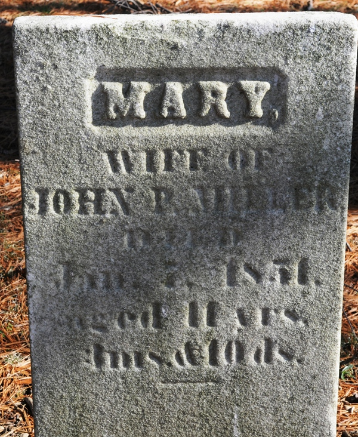

|
|
| 
Mary Jane SHRUM (1809-1851) |
Mary Jane SHRUM 1
-- 1880 U.S. Census (Elkhart, Elkhart County, Indiana; Roll: 275; Family History Film: 1254275; Page: 409D; Enumeration District: 038; Image: 0640) Mary married Rev. John Prior MILLER, son of Rev. Adam MILLER and Sarah PRIOR, on Sep 8, 1828 in Franklin County, Ohio. (Rev. John Prior MILLER was born on Feb 18, 1809 in Greene County, Pennsylvania, died on Sep 28, 1889 in Jefferson Township, Cass County, Michigan and was buried in Reames-Norton Cemetery, Cassopolis, Cass County, Michigan 2.) |
 Another name for Mary was Mary SCHRUM.
Another name for Mary was Mary SCHRUM.